一
《阿Q正传》
“过了二十年又是一个……”阿Q在百忙中，“无师自通”的说出半句从来不说的话。
问：请赐教这后半句的意思。“一个”指什么？
答：一个年轻人。中国社会上还是相信佛教轮回说，因此即使被杀，还会转世再生，二十年之后又是一个年轻人。（不过，此事我不能保证。）
【一個の若者です。支那の社仝では、矢張、亻教の輪劻説を信ずるから。殺されでも、又転生し、二十年立つと、又一人の若者になるはづです。（併しこのことは僕は保詎しません。）】
二
《徐文长故事》[33]
怪不见
问：“怪不见”即怪不得吗？
答：是。
娘舅
问：“娘舅”是母亲的兄弟呢？还是外祖父的兄弟？还是其他的关系？
答：娘舅=母亲的兄弟。
向卫门控告徐文长间人骨肉
问：“间人骨肉”（《咬耳胜讼章》）是什么意思？
答：离间别人骨肉=煽动别人，使父子兄弟不和。
【人の骨肉を離間す。=人を煽動して父子兄弟不和ならしむ。】
三
《二诗人》[34]
a.诗人的何马，想到大世界去听滴笃班去，心里在作打算……
问：“滴笃班”是什么意思？
答：“滴笃班”又名“三角班”，由二、三人组成的戏剧。唱俚词，一句唱毕，以鼓和拍板（由两块木板制成）连续击出“滴”（Dic）、“笃”（Tac）声响，故叫“滴笃班”，是极简单、原始的戏剧。
【滴篤班とは一名「三角班」の二三人で組立た芝居です。俚詞をうたふ。一句歌ふと鼓と拍板（二片の木板で拵へる）とを以つて「滴」（Dic）「篤」（Tac）と
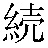
くから「滴篤班」とも唝ふ。極く簡單な、原始的な芝居です。】b.……他的名片右角上，有“末世诗人”的四个小字，左角边有《地狱》、《新生》、《伊利亚拉》的著者的一行履历写在那里……
问：“伊利亚拉”，从发音揣摩是《伊利亚特》吧？
答：故意把Iliad写错杜撰的书名，其实不存在那样的书。
【わざとIliadから間違つて拵らへた書名、宓はそんな本は存在しない。】
c.走下了扶梯，到扶梯跟前二层楼的亭子间门口，他就立住了……
问：什么叫“亭子间”？
答：从正式房间上楼梯的转角处那个房间叫亭子间（小间屋之意，房租便宜），可译作“二楼里屋”罢？
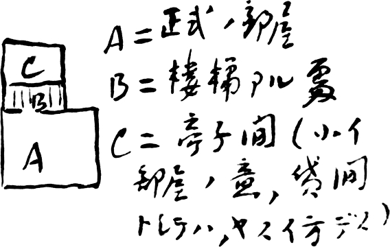
【 A=正式の部屋
B=樓梯ある処
C=亭子間（小い部屋の意、貸間としては、やすい方です）
二階の裏部屋とも訳す可しか？】
d.老何，你还是在房里坐着做首把诗罢！回头不要把我们这一个无钱饮食宿泊处都弄糟。
问：“回头”是“可是与此相反”之意吗？
答：“回头”是“请当心”的意思，难以直译。如意译，为：“请别把我们这个无钱饮食宿泊处都弄糟了！”
【「回頭」は「氘をつける様に」と唝ふ意味ですが、直訳し難し。意訳すれば、「我々のこの無鋨飲食宿泊所を萚な
しにして仕舞はない様に」】
e.……前几天他又看见了鲍司惠而著的那本《约翰生大传》……
问：“鲍司惠而”译为ペヲツフイル？
答：Boswell。
问：“约翰生”译为ヨハネス？
答：不对，Johnson。
f.楼底下是房主人一位四十来岁的风骚太太的睡房……
问：“风骚太太”是“风流夫人”吗？
答：与“风流”稍有区别，可译作“色情的”罢。
【風流と少し違ふ
「エロチク」と訳す可きか？】
g.油炸馄饨
问：“馄饨”是肉馒头，还是烧卖？
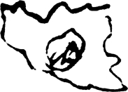
答：都不是。用薄薄的面粉皮子包肉做成，放入油中炸的东西。
【鳑方ともない。阛粉の薄すい皮で肉を包み、油で揚げたもの】
h.马得烈把口角边的鼠须和眉毛同时动了一动，勉强装着微笑，对立在他眼底下的房东太太说：“好家伙，你还在这里念我们大人的这首献诗？大人正想出去和你走走，得点新的烟世披里纯哩！”
问：“好家伙”，含有“啊，夫人（这畜生）”之意吗？
答：直译是“好东西”、“好孩子”的意思。但其实不过是感叹词，与日文“こ奴は”（这家伙）相似。
“烟世披利纯”即inspiration（灵感、天启）。
【直訳すれば「よいもの」、「よい子」、然し宓は感嘆詞にすぎず日本語の「こ奴（いっ）は」と似て居ると思ふ。】
i.大人 先生
问：“大人”与“先生”何者更为尊敬之语？
答：“大人”更为尊敬。“大人”相当于日本的“阁下”，大多用于对官吏的称呼。
【大人の方はより尊敬の語です。大人=閣下（日本に于けるの）、多く役人に牷して使ふ】
j.中南小票
问：是中南银行的一圆纸币吗？
答：是的。
k.一边亭铜亭铜的跑上扶梯去，一边他嘴里还在叫：“迈而西，马弹姆！迈而西，马弹姆！”
问：是西洋歌的发音还是中国歌？若是中国歌，是什么歌？意思是什么？
答：法语：谢谢，夫人。
【メルシ—、マダム（=亻蘭西語、有難ふ奥様）】
m.[35]他嘴里的几句“迈而西，马弹姆！”还没有叫完，刚跳上扶梯的顶边，就白弹的一响，诗人何马却四脚翻朝了天，叫了一声“妈吓，救命，痛煞了！”
问：“妈吓”是“这畜生”之意吗？
答：若直译，即“妈妈呀”，但像你这样译也可以罢。
【直訳すれば「御母様よ」だがそう訳したらよいでしよう】
n.楼底下房东太太床前的摆钟却堂堂的敲了两下……
问：“摆钟”是钟吧？
答：是的。
o.诗人回过头来，向马得烈的还捏着两张钞票支在床沿上的右手看了一眼，就按捺不住的轻轻对马得烈说……
问：“按捺不住”是不停地抚摸坏眼镜，还是形容轻轻地对马得烈说？
答：无法忍耐（自己的想法要说出来，已经无法忍耐）。
【我慢が出瘄なくなつた様に（自分の考へを発表することをもう我慢が出瘄ない）】
p.“有了，有了，老马！我想出来了。就把框子边上留着的玻璃片拆拆干净，光把没有镜片的框子带上出去，岂不好么？”
马得烈听了，也喜欢得什么似的，一边从床沿上站跳起来，一边连声说……
问：“光”作何解释？
答：“仅仅”的意思。
问：“也喜欢得什么似的”是什么意思？
答：喜欢得无法说，其实仅“非常喜欢”之意。
【「言へ様のない様によろこんで」宓は只「大変よろこんで」の意】
（增田画）
q.搁起了腿
问：是两腿交叉，还是平行？
答：两腿交叉。
R.我们这一位性急的诗人，放出勇气，急急促促的运行了他那两只步子开不大的短脚，合着韵律的急迫原则地摇动他两只捏紧拳头的手，同猫跳似的跑出去又跑回来跑出去又跑回来的……
问：“原则地”是“规则地”之意吗？
答：是的。“原”殆误排。
【「原」は誤植だろう】
r.“老马，我们诗人应该要有觉悟才好。我想，今后诗人的觉悟，是在坐黄包车！”马得烈很表同情似的答应了一个“乌衣”之后……
问：“乌衣”与“喂喂”同义吗？
答：法语，即yes。这位诗人是法国留学生，故常用法语。
【「ヴイ」（亻蘭西語=yes。この詩人は亻國留學生だから、よく亻語を使ふ）】
s.车夫们也三五争先的抢了拢来三角角子两角洋钿的在乱叫。
问：“拢”是什么意思？
答：“抢了拢来”，跑来。“拢”即聚集。
【馳けて瘄て（集る）】
问：“角子”、“洋钿”是什么意思？
答：“角子”、“洋钿”都是银币。
【「角子」「洋鈿」皆な只「銀貨」を意味す】
t.臭豆腐
问：是油炸豆腐吗？
答：稍有臭味的豆腐，类似西洋的干酪。
【少し、くさらした豆腐、西洋の「チ—ス」の類】
u.“喂！嗳嗳……大人，郎不噜苏，怕不是法国人罢！”
诗人听了这一句话，更是得意了，他以为老马在暗地里造
出机会来使他可以在房东太太面前表示他的博学……说：“老马，怎么你又忘了，郎不噜苏怎么会不是法国人呢？他非但是法国人，他并且还是福禄对儿的结拜兄弟哩！”
问：“郎不噜苏”、“福禄对儿”是人名吗？
答：“郎不噜苏”即Lombroso（龙勃罗梭），意大利学者。“福禄对儿”即Voltaive（伏尔泰）。可直译为：龙勃罗梭怎么会不是法国人？他不仅是法国人，而且还是伏尔泰的把兄弟呢！
【Lombroso（意大利の學者）
直訳すれば——ロンブロゾ—は何（どう）して亻蘭西人でないことが出瘄るか？他は亻蘭西人であるのみならず、他は且つヴオルテルの義兄弟だい！】
问：“结拜兄弟”是怎么回事？
答：“结拜兄弟”指无任何血缘关系的人，因情投意合，起誓结拜为兄弟。如《三国演义》中的刘、关、张三人。日本叫“义兄弟”罢？
【「接捭兄弟」とは何の関係もない人が情意投合の爲め、誓て兄弟となる。例へば、三國志演義中に于ける劉、関、張三人の如し。日本では「義兄弟」と唝ふか】
v.他觉得“末世诗人”这块招牌未免太旧了，大有更一更新的必要，况且机会凑巧，也可以以革命诗人的资格去做诗官。
问：“诗官”是“诗的官吏”吗？
答：“诗官”系作者杜撰的名词。“靠诗做官”的意思，稍为难译，与“诗的官吏”还不同。或许只译作“官吏”更易理解。
【「詩官」は作者の拵へた名詞。「詩の御蔭でなつた役人」の意、少し訳しにくい。「詩の役人」と又違ふ。或は只「役人」と訳した方が解り易いかも知らん】
w.诗人一见到笑迷迷地迎出来的中年老板，马上就急得什么似的问他说……
问：“急得什么似的”是什么意思？
答：慌张得无法形容，即异常慌张。
【「言へないほと慌（あは）てて……」=「大変慌てて」】
x.“是不是？假如你们店里在这四日之内，也要死人的话，那岂不耽误了我的名片的日期了么？”
问：“是不是”是“怎么样”还是“不是么”？
答：“不是么”之意，也可译作“是吧”。
【或は「そうだろう」とも訳す可し】
y.她看了他一副痴不像痴傻不像傻的样子……
问：愚蠢之意吗？
答：是的。若直译即“既不像痴，又不像呆”，其实就是痴愚。
【直訳すれば=馬鹿らしくもない、阿房らしくもない宓は只=馬鹿らしい】
z.一盘很红很热很美观的蕃茄在那里……
问：西红柿吗？
答：是的。
a′.诗人喝了几杯三鞭壮阳酒。
问：中国酒还是西洋酒？若西洋酒，原名是什么？
答：中国酒。“鞭”=男性生殖器（限于动物），“三鞭”=三种动物的生殖器（大约海狗之类罢）。
【「鞭」=男性生殖器（動物に限つて使ふ）、「三鞭」=三種の動物の生殖器（腽肭臍などでよ—）】
b′.何诗人，你今晚上可以和我上大华去看跳舞么？你若可以为我抛去一两个钟头的话……
问：“抛去”是什么意思？
答：=扔掉=糟蹋=浪费
【=すてる=無馱にする=ついやす】
问：为自己分出一两个钟头之意吗？
答：是的。
问：那么此处的“话”是什么意思呢？
答：如果的意思。
c′.亨亨的念出了一首即席的诗来：
“嗳嗳，坐一只黑泼麻皮儿……”
问：“黑泼”是什么意思？“麻皮儿”是mobile（汽车）吗？或许“黑泼麻皮儿”=Hupmobile的音译？
答：“麻皮儿”，汽车的意思。“黑泼麻皮儿”系Hupmobile的音译。
四
《皮带》[36]
a.“……哈哈哈。”梁副官虽然是好人，笑起来可像坏鹅。
问：“坏鹅”是坏的鹅？难听的鹅叫声？
答：不明。想来也许是“愚蠢、心肠坏”之意罢。鹅在中国被当作笨伯。
【不明。思ふに「馬鹿らしくて意地朘い」と唝ふ意味だろう。支那では鵝鳥は馬鹿なものだと見られて居る。】
b.“你愁什么，”梁副官舐舐手指，翻着帐簿。
“事情问姨爹要，要不到就住在这里吃，慢慢地来，哈哈哈。”
问：“要”字怎么译？
答：“要”=请求。“事情”=工作。工作向姨爹请求，求不到，就住在这里吃，慢慢地来。
【仕事（就職口）は姨爹に（探して）くれて貰ふ。くれなければここに住み んで食う，ゆくりと】
んで食う，ゆくりと】
c.他便想挣口气
问：“想挣气”是什么意思？
答：想奋发。他想发奋。直译为“加劲努力”，即奋发图强。
【奮発しようと思ふ
他は奮発しようと思つた。直訳すれば「一息（いき）を努力する」即ち「奮発すること」。】
d.他听着隔壁梁副官格达格达地在打算盘，打着打着梁副官用了九成鼻音喊人。
问：“打着打着”是“边打算盘边……”即“一边吧嗒吧嗒打算盘一边……”的意思吗？
答：稍有区别。“打着打着然后（打了相当长的时间之后）”的意思。
【少し ふ
ふ
打つて打つてそうして（陘分打つてから）】
e.上士以前当学兵，现在晚上没事就看些书。
问：“学兵”是什么？
答：学兵：国民党“北伐”前及“北伐”中，不满于北洋军阀的革命学生很多去了广东。这些学生编为兵队训练，其实就是士兵，却别称“学兵”。“学生上升为兵”之意。他们在北伐时死了很多。
【學兵=國民黨が「北伐」の前及び最中、北洋軍閥に牷して不平を抱く所の革命的學生達が陘分、庀東に行きました。こんな人々を兵隊として訓練し、宓は兵卒だが併し别に「學兵」と囷した。「學生上りの軍隊」の意です。彼等は北伐の時に汊山死んだ】
f.睡觉行头
问：寝具吗？
答：寝具的俏皮说法。即睡觉用具。
【寢具を洒落に唝ふ=ねる道具】
g.拼死命找人说话
问：拼命寻找工作之意吗？
答：拼命求人讲话=托人寻找工作。
【一生懸命に人に賴んで唝つて貰ふ=人に賴んで就職口をさがして貰ふ】
h.赵科员定了几份白话文的杂志
问：成为定期读者吗？
答：对。
i.吃稀饭的时候他问薛收发：“你的政策以为咸鸭蛋的趋势好，还是皮蛋的趋势好？”
问：“吃稀饭的时候”是早饭时吗？
答：喝粥时（即早饭时）。
【粥（かゆ）を食るとき。】
问：“趋势”是什么意思？
答：倾向、趋向之意。但此处似作“做法”用。
【傾向、おもむき。
併しここには「やりかた」として使つてるようだ】
问：“皮蛋”？
答：变黑的盐醃蛋。盐醃蛋的一种，日本没有，除按原文照写外，没有别的办法。
【黑くなつた墉漬卵。
墉漬卵の一種で日本にない。そのまま、書く外仕様がない】
j.炳生先生还是一刻也不休息地埋头抄麻衣什么，而且用恭楷。
问：“恭楷”是恭敬的楷书吗？
答：是的。
k.“两个理想”又自己商量着：“一个趋势使他们不重心，一个趋势是自己同处长科长感情好起来。这样才能算是青年范围的政策。”
问：“不重心”是“使其安心”？“不使其愤愤不平”？
答：不使其担心。
【心配させない】
l.第二天有个大信封的东西到梁副官手里：叫他“毋庸”到处里办公了，叫他“另候任用”。
问：是“解雇”还是“休职”？
答：休职。
m.炳生先生心脏一跳。他记得相书上说二十几岁的人是走额头运。他对镜子照照额头：额头很丰满。
问：“走额头运”系麻衣相法秘传，其内容凡人难以理解。不过，至少请日本式地将这四个字解释一遍！是“额头奔走之运”吗？读后不明何意，嗟呼！
答：据相法云，人的命运与面相有关。按年龄相应由脸部上方向下方移动。如二十岁与“额运”相当（即其时额高运高，额低运低），三、四十岁与“鼻运”相当，五、六十岁为“口运”，七、八十岁为“颚运”，九十、一百岁为……？“走额头运”是指与额形相应的境遇，额头丰满则运气好。
【相法によれば、人間の運命は、顏の様子と関係す。年齢に比例して顏の上から下に行く。例へば二十歲なら、額の運に當る（即ちそのときの額の形がよければ、運命がよい、わるければわるい）三四（十）なら鼻のあたりの運、五六十なら、口辺の運、七八十ならあごの運、九十一百なら……？
走額頭運とは額の形と相庥する境遇にあること。額が伻淶ならば運がよい筈だ】
五
《皮带》（之二）
a.“江斌，褥单要铺平哪，你真是！……还要放下些……”
问：“你真是”是“你真正是”吗？
答：“你真正是（傻瓜）”之意。
【「御前は本當に（馬鹿だ）」の意】
问：“还要放下些”是再松一点之意吗？
答：再往下一点。
【もつと下の方に】
b.……谈来谈去谈到娘儿们，因此连带地把脱裤的事也谈到些……
问：“娘儿们”是女人吧？
答：女人，但含有轻蔑之意。
【「女」の意、但し軽蔑の意あり。】
问：“脱裤的事”是“猥亵之话”吗？
答：只是“脱裤”之意，但指性交罢。
【只だ「褲をぬぐこと」であるが性交を指して唝ふだろう】
c.少尉准尉虽然只是起码官儿，可总是官儿，不是士兵。
问：“起码”是最初、最低之意吗？
答：是的。
d.娘老子
问：双亲、父母之意吗？
答：是的。
e.用了九成鼻音喊人：
“江斌，江便！”
问：“九成鼻音”？
答：“九成鼻音”即百分之九十的鼻音，声音大多从鼻孔发出。
【九十パーセントの鼻音。
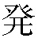
音は多く鼻を通して出る】问：“江”的发音是“チヤング”，还是“キヤン？”
答：在中国，“江”读作“チアン”。
【支那では「チアン」です】
f.“申饬”
问：译作“宣告戒饬”行否？
答：仅“戒饬”之意。不过，这样译也行。
【「戒飭」だけです。しかし、こう訳してもよい】
g.“勤务兵就……”她摇摇头。“十块五毛钱一个月，伙食吃自己的，忙又忙得个要死，外开一个也没有……”
问：“外开一个也没有”，别的职业一个空缺也没有的意思吗？
答：意外的收入一分也没有。“外开”，正当收入以外的收入，例如贿赂。
【意外の葖入は一文も無い
「外開」とは、あたり前以外の葖入、例へば賄賂】
h.“狗婆养的，此刻不是又想到了！”
问：“狗婆养的”是骂人话“这畜生”吗？
答：骂人话。直译即雌狗的儿子。
【直訳すれば=雌狗の子】
i.“他们哪里替我诚心找事，诚心找还找不成么，一个中将处长？……我的事情，他们只说说风……风……风什么话的。”
炳生先生记得“下江人”对这些话有个专门名词，叫风什么话，但中间那个字怎么也想不起。
问：“下江人”是长江下游地方的人吗？
答：是的。
问：“风什么话”即街谈巷议吗？
答：即风凉话，讲些毫无关系的话。
【すずしいことを言ふ。なんの関係もないようなことを唝ふ】
j.经过职务：“曾任传令中士，须至履历者。”
问：“可作为履历”之意吗？
答：“履历如右”之意。
【履歴は右の通りなり】
k.“五哥你说咸板鸭好还是烧鸭子好？”
问：“咸板鸭”和“烧鸭子”是“盐渍过的鸭子”和“烧家鸭”吗？
答：是的。
l.中尉收发
问：“收发”？
答：即日语“受附”。
m.“恭喜邓先生，请你盖个私章。”掀开一本簿子。
问：“盖个私章”，是“请按印”，还是“请签名”？
答：请按印。私章，个人的印章，不是官署的印章。
【私章、個人の印、役所の印でない】
n.右令少尉司书邓炳生准此。
问：“右，封少尉司书，邓炳生准此”之意吗？
答：右，命令少尉司书邓炳生，照此（右）办理！
【右、少尉司書鄧炳生に令す。此（右）の如くせよ！】
问：“令”连结全句还是只连结少尉司书？
答：连结全句。
o.“这是处里的公事，你没看见么！还要呈请部里正式委。”
问：“你没看见么”是“没有必要跟你说”（不是你知道的事）之意么？
答：你不看见吗（你不知道吗）之意。
【お前は見えないのか（知らないのかの意）】
问：“委”，“委任”吗？
答：是的。
p.办公厅。
问：事务所？事务室？
答：事务室。
q.给士兵瞧不起的长官，做人是很难的……
问：“做人是很难的”什么意思？
答：做人啊，很难。（被士兵轻蔑的长官，工作难干）（因为不听从命令）。
【人となるや、むづかしい（兵卒に軽蔑される長官は仕事は難しいものだ）（命令などをきかないから）】
r.“我说本处里的勤务老爷。”
问：“勤务老爷”是勤务兵的军队用语吗？
答：“勤务”之后带个“老爷”，为轻蔑口气。
【旦那をつけるのは軽蔑の口調です】
s.性的事件必须要谈的以外，就是电影哪家好，……
问：“必须要谈的以外”，是“不用说”、“此外”之意？
答：性的事必谈，除此而外……
【性のことは屹度と話しますが、その外は】
t.撤了差。
问：怠职之意吗？
答：被停职。
u.上校。
问：“校”是军队编制中，将官与尉官间的军衔么？
答：是的。
v.起居是有江斌伺候。照规矩炳生先生可以跟另一个尉官合用一个勤务兵，可是他没用，每月就能拿半个勤务兵的钱：五块两毛五。江斌服侍，每月给江斌两块大洋。所以炳生先生每月的收入一起有四十五块两毛五了：那三块两毛五是额外收入……
问：“可是他没用，每月就能拿半个勤务兵的钱”中，“他”指谁？谁拿“半个勤务兵的钱”？
答：指炳生。炳生先生应当可与另一尉官合雇一个勤务兵。但他没雇，就把雇金的一半装入了自己的口袋。
【當前は炳生先生は外の尉官一人と共に、一人の勤務兵をやどることが出瘄るのですが、併し彼は、それを僱用しないで、その給金の半分を自分のポツケトに入れた】
w.“江斌，江便！……喊你怎么总不来，嗯？……有的事情做惯了的，还是要嘱咐，真是……”
问：“嗯”是“喂”吗？
答：“唉”的意思。
问：“有的事情做惯了的”是什么意思？
答：有些事早该做惯了，可是还非得要叮嘱不可。
【或る仕ことは、もうなれて居る筈だのに、併し、また、言つけなければならない】
x.“她来了之后，你的家庭范围还重心不重心？”
问：“重心”是安定之意吗？
答：难办之意。
【困る】
y.“那真是能者多劳。”
问：伟人担忧多之意吗？
答：能人苦劳多。
【よく出来る人は苦
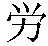
が多い】z.接着满不在乎地笑了，不过笑得很紧张
问：“满不在意的”意思吗？
答：什么事也没有似的。
【なんでもないように】
问：又，《皮带》中的主要地址的“处”及“处长姨爹”的“处”，如何译成相应日文，请赐教。
答：译成“局”如何？
【局と訳したら、どうです】
六
《稀松的恋爱故事》[37]
a.姓是姓……姓牛！因为姓得不大那个，很少被人提起……
问：“姓是姓……姓牛”是“姓就叫姓……即牛姓”之意吗？
答：直译的话=“姓，姓，……姓牛！但由于姓氏并不显赫，故很少被人提起”（牛姓既不惹人喜爱，又非伟人亲属之故罢）。
【直訳すれば=「苗字は、苗字としては……牛ですが！その苗字は大したものでもないから、そう人の口にのぼらない。」
（「うし」はおもしろくない苗字の爲めか、或はえらい人の親類でない爲めでしよう）】
“干么尽背履历？”
问：一般讲述履历的方式叫“背”吗？“背履历”是否成语？
答：为何老是喋喋不休地讲履历？“尽”，只是；“背”，暗诵。
【どうして何時でも履歴を喋てるのか】
b.三挖子是专门伺候他的一个不大不小的孩子。
问：“三挖子”是随便杜撰的名字吧？有何含义？
答：随便杜撰的名字。
c.“唔，是不是去打茶围？”
问：一起喝茶之意吗？
答：去妓馆饮茶。
【妓館にて茶を飲む】
d.“你干么不就‘下水’？”
问：“下水”指猥亵行为吧？确切含义不明。
答：投宿（专用于买娼时）。
【とまること（女郎買のとき跶用）】
e.“仙女牌的呢？……那么瓦嫩踢奴牌的呢？……”
问：“瓦嫩踢奴可否读作ヴアレンチヌ？
答：可以。
f.男的瞪着眼瞧她，似乎想从她头发里找出不□癞儿式的半个世界来。
问：请告“不□癞儿”发音及脱落的字。
答：[38]
g.“听说现在耗痢窝[39]的电影明星还作兴大嘴哩。”
问：“耗痢窝”是 American（美国）的音译吧？
答：是美国。似乎故意用那样的坏字眼。
【アメリカのことです。故意にそんなわるい字を使つたらしい】
h.电灯下垂着的绿色流苏。白绸子桌布。汽炉。Vis-avis。
问：“Vis-a-vis”，中文如何写？
答：中文无，要写的话，可作“面对面”。
【支那語なし。書くなら「面牷面」】
i.那个赞许地笑着：猪股癞糖使他的牙齿成了干鸭肫的颜色。
问：“干鸭肫”是“晒干的家鸭之胃”吧？
答：是的。
j.猪头肉
问：猪头部的肉吗？
答：是的。
k.“诗人怕我割他靴子。”
问：“夺他的情人”之意，对吗？
答：对。但专用于妓女。
【そうです。併し跶門に女郎のときに使ふ】
l.“你真像 Grara Bow，是真的，越看越像。”
“那够多难看！”
“怎么，你说难看？……”
问：“那够多难看”如何解释？
答：那家伙多么丑呀！“ Grara”似应作“ Crara”。
【あ奴はどんなに見醜くいたろう】
问：“怎么，你说难看？”是“她并不那么漂亮”，还是“她会那么漂亮吗”？
答：日译为：“何んだ、汝は醜くいと云ふのか？”
m.直到各人回去，他们没做什么减“灵”的事。
这晚罗缪写了一个钟头日记。
这晚朱列照了一个钟头镜子。
问：“钟头”何意？“钟”是置于枕边的闹钟吗？从发音看，“钟”是“床”的谐音吧？
答：“一个钟头”即一个小时。一小时记日记。一小时用镜子看自己的脸。
【一個鐘頭とは一時間のことで
一時間、日記を書いた
一時間ほと、鏡で自分の顏を見た】
n.“你瞧这风景够多好！”女的看着些画片……
“这像牯岭那个什么，”他说。
“牯岭我没到过。”
问：“牯岭”是何处的山？
答：江西庐山的异名，避暑胜地。
【江西省にある廬山の异名、避暑地です】
o.“烫手！”她那被粘着的嘴叫。
问：“烫手”似俗语，不懂意思，可否意译为“不得了”、“住手吧”？
答：要烫伤手的！似有“住手”的意思。
【手に烀どするぞ。「およしなさい」の意でしよう】
p.“瞧瞧她的日记，”罗缪拿给我们看。“别瞧她不起，她简直是个女作家。只是文句里多几个‘了’字。”
“我真是
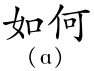
的傻呵！我知道我错了！他一百三十四号信上告诉我了！我真是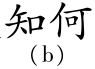
的傻呵！”问：“他一百三十四号信上告诉我了”与前两句（a）相连接，还是与后一句（b）相连接？
答：与二者都相连，其实a即b，有一句就够了。
【鳑方とも接する、宓はa=b、一句あれば足りるのです。】
q.上馆子二百余次（详见他俩的日记）
问：“馆子”是旅馆的意思吗？去饭馆等不也叫“上馆子”吗？“上馆子”是投宿？还有更特殊的（男女二人同衾）意思吗？答：“馆子”=饭馆（此外没有特别意思）。
【料理屋（外に特殊の意味なし）】
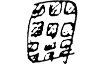
（增田画）
r.“我们的窗档子用淡绿色印度绸的，好不好？”
问：“窗档子”是窗棂、窗格子吗？
答：按说当是窗格子。但此处作窗帘用，恐系作者笔误。
【當前は窗の格子です、併しここでは窗の幕として使つて居る、作者の誤でしよう】
s.千把块钱。
问：一千美元？
答：一千美元左右。
些涂退光漆的木器。
问：“退光漆”，有专门的西洋语吗？
答：中国话。闪闪发光的漆。
【支那語です。ピカピカ光るもの】
t.“缪，钢琴送来之后放到哪间房里，你说？…… Betty，你看见罗缪最近的诗没有？我想给他画张油画像。对不起。今天没给韩太太预备好酒。老柏你瞧……”
朱列指着一位客的怪脸，把三条指头放在嘴上笑。吃饭了。坐在罗缪的上手。
他拉拉罗缪的袖子：
“诗人，我怕我十辈子也找不着个把爱人。”
问：“钢琴送来之后”有“被打搅”的意思吗？
答：没有。
问：“今天没给韩太太预备好酒”中，“给”是“为”的意思吗？
答：是的。未准备。“好酒”是好的酒。
问：“一位客的怪脸”，是指韩太太吗？
答：是吧。
问：“吃饭”，谁？无主语，颇费解。
答：大家吃饭。
问：“我十辈子”是“我等十人”即“大多数人”的意思吗？
答：“十辈子”即“十生”，其实只是“一生”的诙谐说法。
【十輩子=十生涯（宓は「一生涯」のことを洒落に言ふ丈）】
七
《稀松的恋爱故事》（之二）
a.“朱——列唷！”谁在后面大叫。
赶紧回头——
唔，卖猪头肉的。
“朱列，猪头肉，”他念着“猪头，朱列，朱……猪头肉，肉，列，朱，猪……”
问：最后的话单纯表现“他”意识的混乱，“朱列”与“猪头肉”没有特殊的（习惯上的）关系吗？或许“朱列”特别含有猪头肉红、新鲜等言外之意吧？
答：“朱”与“猪”同音，“列”与“肉”发音相近。因此“猪肉”听起来像“朱列”。
【「朱」と「猹」とは同音。
「列」と「肉」の発音は似つて居る。
だから「猹……肉」と言へば「朱列」の様に聞えます。】
b.“好极了，比瘟西，还好。”
“干什么拿我比瘟西，我们派数不同：我们是后期印象派。”
问：“瘟西”是谁？我一点头绪也找不到。
答：文艺复兴时期画家LeonardodaVinci。张天翼常常这样乱写西洋人名，其实这是坏习气。
【文蕓復興期の畫家LeonardodaVinci
張天翼はよく西洋人の名をこんなに滅茶苦茶に書くなら宓にわるいくせです】
c.“那够多难看！”
问：可否译作“那不是非常难看吗？”
答：可以。
八
《今古奇观·乔太守乱点鸳鸯谱》
〇那裴九老，因是老年得子，爱惜如珍宝一般，恨不能风吹得大，早些儿与他毕了姻事……
问：“他甚至想倘若风儿大可促使其长大……但那是不可能的”之意吗？
答：恨不得风一吹就使他长大，好早点结婚=对不能使其极迅速长大完婚而感到遗憾。
【風が吹くと直に大きくなつて早く結婚させることが出瘄ないことを恨む=極く迅速に生長して結婚の出瘄ることが出瘄ないことを殕念だと思ふ】
〇玉郎从小聘定善丹青徐雅的女儿……
问：“善丹青”是“出色的画家”？还是应读作“聘定善，丹青”？
答：擅长丹青（画）的好手徐雅。
【丹青（畫）の上手なる徐雅】
〇因冒风之后，出汗虚了，变为寒症
问：“汗出光了”还是“盗汗”？
答：出了许多汗，变得衰弱（虚）了。大约是药物使其出汗的罢，不是盗汗。
【汗を汊山かいて衰弱（虚）になつた。（蘺で出したのだろう）】
〇万一有些山高水低，有甚把臂……
问：“把臂”是什么意思？
答：有何把握=也许有危险。
【どんな把握があるか=危邗かも知らん】
〇第二件是耳上的环儿，此乃女子平常时所戴，最轻巧也少不得戴对丁香儿。
问：耳环装饰的是丁香的果实吗？
答：不是。
问：用丁香子作耳环吗？
答：不是。
问：是作为普通金银耳环的附属装饰品吗？还是仅仅形容耳环之大小？
答：不是。大概是钉子形耳环罢（大多银制）。丁香耳环最为简便，戴时须挂一对。“轻”=简，“巧”=便。
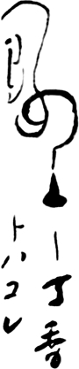
【丁子の形をなして居る耳環だろう（大抵銀製）
丁香とはこれ
一番簡便なことにするも一牷丁香腘を捱けなければならん】
〇专候迎亲人来，到了黄昏时候，只听得鼓乐喧天，迎亲轿子，已到门首，……孙寡妇将酒饭犒赏了来人，想念起诗赋，诸亲人上轿……
问：“想念起诗赋，诸亲人上轿”，是“因念起诗赋，就想起亲人上轿”之意吗？诗赋是谁念的？什么诗赋？去新郎处时关门的诗赋吗？
答：新娘上轿时，有人吟诗（或文），催其上轿。诗文或旧作或新制，吟者或文人（大抵托新娘的亲友）或道士（雇用）。
“诸亲人上轿”中的“亲”，系“新”之误，“新人”=新娘。
【花嫁の輿入のときに人ありて詩（or文）を歌つて其の輿入を催促す。詩或は文は舊作あり、或は新製す。それを歌ふものは或は文士（大抵花嫁の親友に賴む）或は道士（僱用）。
「新」の誤リ、「新人」=花嫁】
〇孙寡妇又叮嘱张六嫂（媒婆）道：“与你说过，三朝就要送回的……”
问：新婚三朝，新人偶尔有回娘家的风俗吗？
答：婚后第三日，新人大多回娘家。
〇且说迎亲的，一路笙箫聒耳，红烛辉煌，到了刘家门首，宾相进来说道……
问：“迎亲的”是雇来的工人吗？
答：是。
问：或者，“迎亲的”是亲戚吗？
答：不是。
问：“宾相”令人想起结婚式上导师之类的人（像西洋的牧师？），他们是僧侣、道士？还是其他特定职业的人？或许是普通的亲戚或知交临时担当吧？
答：不是特定职业者，是亲戚、知交临时担当。
宾相，带着新郎去迎新娘的人，大多是新郎的亲戚或友人（必须是年轻人）。
【賓相、花婿を連れて嫁を迎ふに瘄るので大抵花婿の親類或は友達です（年は若いものでなければならん）】
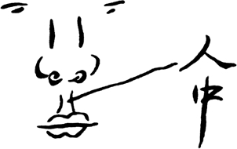
〇只见头儿歪在半边昏迷去了……当下老夫妻，手忙脚乱，捺住人中，即教取过热汤，灌了几口……
问：“捺住人中”是强行把人留住的意思吗？
答：中国人认为人昏厥时，如用指甲掐其“人中”，他就有望不死。
【支那人は人が昏厥するときに若し其の人の「人中」を爪でかたく押して置けば死んで仕舞はない望みがあると考へて、居るものです。】
〇这事便有几分了
问：“几分”？
答：这件事似乎有几分（希望）。
【そのことは幾分（の望み）がある様になる】
〇木饿
问：麻木性饥饿？
答：不明，有错字。我想只是“饥饿”之意。[40]
【不明、誤字ある、只「飢餓」の意と思ふ。】
〇“与你一头睡了”
问：“一起”或“向着同一方向头并着头”的意思吗？
答：说法是后者，但意思是前者。
【唝ひ方は後者けれども、意味は前者】
〇“还像得他意……”
问：使其称心如意？
答：对。
〇“须与他干休不得……”
问：“干休”犹关系吧？
答：与他不罢休，即与他无法和平相处。
【彼と只でやむことが出瘄ない=彼と平和になることが出瘄ない】
〇皮箱内取出道袍、鞋袜……
问：“皮箱”是箱子吗？
答：对。
问：“道袍”是外套？“鞋袜”是劳动时穿的胶皮底袜子？
答：“道袍”即道士的衣服，但此处只是长衫之意。“鞋袜”即鞋子和袜子。
【道袍=道士の着物の意だけれども、ここには只長い衣服の意だ。
鞋=くつ、襪=足袋。】
〇“可恨张六嫂这老虔婆……”
问：是骂人的话吗？
答：即“恶婆”（骂人话）。
【朘婆（朘駡なり）】
〇骂道：“老忘八，依你说起来，我的儿应该与这杀才骗的。”一头撞个满怀……
问：突然全身相撞吗？“个满怀”是自己还是对方？
答：骂的家伙用头向被骂的家伙怀中（胸口）撞去。
【駡む奴が頭で駡まれる奴の懷中（むねの處）を撞た】
〇“老忘八，羞也不羞，待我送个鬼脸儿与你带了见人”
问：“鬼脸儿”是你的，还是第三者的？
答：全句意为：“老混蛋，不害羞么？我送个面具给你吧，遇见人时戴上它！”
【耄れ、はづかしくないか？我が仮面一つ上げましよう、人様と遇ふとき、つけなされ！】
〇正值乔太守早堂放告……
问：“宣布早上的勤务”吗？
答：不是。早晨在公堂受理诉状。
【朝、裁判する処に出て告訴狀を受取ること】
〇“……谁想他纵女卖奸……”
问：“纵”是允许、放置的意思吗？
答：“纵”=故意放任（让自己女儿卖淫）。
【絝=故意の放任
自分のむすめを淫壳させ（=絝）る】
〇“我看孩儿病体，凶多吉少，若娶来家，冲得好时……”
“况且有病的人，正要得喜事来冲他，病也易好……”
“故将儿子妆去冲喜……”
问：“冲”是什么意思？
答：中国的迷信：家中或他人若遇不吉利事时，就迎娶新娘，以为喜事能冲破厄运。“冲”=冲突、冲破。故男子重病时若迎娶新娘，便可病愈。又以为参加别人结婚式，也有这样效果。
【支那の迷信：家の中、或は人に、不吉なことあるときには花嫁を迎ふことあり。喜事が不吉の運命をぶちこはすことが出瘄ると思ふ。冲=衝（突）=ぶちこはす。だから男が重病なときに花嫁を迎へばその病氘はなほすと唝ふ。又、他人の結婚式に行けば、矢張、こんな蜰めあると思ふ。】
〇本该打一顿板子……
问：用板打罪人吗？
答：是。大的“板子”是打屁股的，小的是私塾的老师用来打头或手掌的。
【大股を彀るものです
これは頭或手掌を打つもので寺小屋の先生が使ふ】
〇乔太守援笔判道：“弟代姊嫁，姑伴嫂眠，爱子爱女，情在理中；一雌一雄，变出意外。移干柴近烈火，无怪其然；以美玉配明珠，适逢其偶。孙氏子因姊而得妇，搂处子不用逾墙；刘氏女因嫂而得夫，怀吉士初非衒玉。相悦为婚，礼以义起。所厚者薄，事可权宜。令徐雅便婿裴九之儿，许裴政改娶孙郎之配。夺人妇，人亦夺其妇，两家恩怨，总息风波；独乐乐，不若与人乐，三对夫妻，各谐鱼水。人虽兑换，十六两原只一斤；亲是交门，五百年决非错配。以爱及爱，伊父母自作冰人；非亲是亲，我官府权为月老。已经明断，各赴良期。”
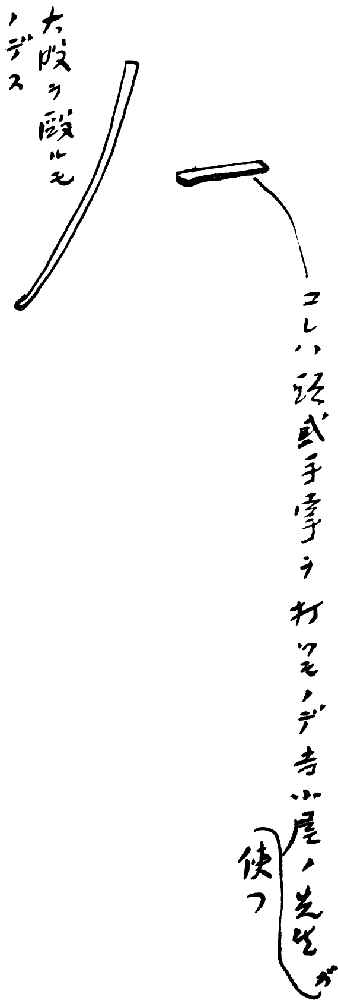
问：“搂”是抱的意思吗？
答：是。
问：“吉士”是什么意思？
答：好男子。
问：“乐乐”是“乐所乐”之意么？
答：是。
问：“亲是交门，五百年前决非错配”是谚语吗？
答：不是。
……[41]
问：“良期”，是指结婚式吗？
答：好时辰，即举行结婚式时。
【ここでは（結婚式を指す）よい時=結婚式搿行の時間】
〇取出花红六段，教三对夫妻披挂起来
问：“花红”是什么？
答：若直译，即“簪与红绸”，但此处仅作“红绸”之用。
【直訳すれば簪ざしと赤い綢ですが併しここには只「赤い綢」として使ふ。】
九
《今古奇观·转运汉巧遇洞庭红》
〇苏州阊门外有一人
问：“阊门”是一般名词吗？
答：不。
问：是特定名词吗？
答：是。
〇先将礼物求了名人诗画，免不得是沈石田、文衡山、祝枝山搨了几笔，便直数两银子……
问：“免不得”，一直关联到句末“数两银子”吗？
答：对。免不得（要买）沈……等人涂几笔就值几两银子的东西。
【沈……等が幾筆か涂るとぢき銀子幾鳑を值する（様なるものを買ふことを）免ぬかれなかつた。】
〇妆晃子弟
问：摩登少年？纨袴子弟？
答：不明，恐系后者。
【不明、恐らく後者だろう】
〇北京微 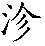
问：“微沴”指梅雨还是仅指潮湿天气？
答：“微沴”指因梅雨而天气潮湿。
问：“合而言之”是什么意思？
答：“总括起来说”=只是“粘着”的诙谐说法。
【一括して唝へば=「粘着した」と唝ふことを洒落れて唝ふだけだ】
〇但只是嘴头子诌得来，会说会笑，朋友皆喜欢他有趣，游耍去处，少他不得，也只好趂日不能勾做家，况且他自大模大样过来的，帮闲行里又不十分得人有他做队的，要荐他坐馆教学，又有诚实人家嫌他是个杂班令，高不凑低不就，打从帮闲的处馆的两项人，见了他也就做鬼脸……
问：趂日=每日？
答：不。趂日=追逐日子=每日游手好闲。
【=日々を追ふ=每日のらくら食って行く】
问：“做家”是谋生之意吧？
答：是。
问：“大模大样过来的”是过惯奢华生活之意吗？
答：态度一向傲慢。
【高慢な態度をやって来た。】
问：商务版作“不十分人得有队有他的”，广益版作“不十分得人有他做队的”，何者正确？
答：商务版误。
问：“不十分得人有他做队的”是“不太合群”或“几乎不合群”之意吗？
答：“人”后应加句号。“不十分得人”，意为那人不被人喜欢。“有他做队的”，意为有他的同类。
【そう人にすかれない
彼のたぐい有り】
问：“要荐他坐馆教学”是“家庭教师”吗？
答：想推荐他当私塾教师。
【彼を寺小屋の教師にならせたいと思ふ】
问：“杂班令”是游艺人吗？
答：没有一定职业的人。什么事都做的人=做什么都靠不住的人。
【=一定の職業を持たない人
何んでもやる人=何でもあやしい人】
问：“打从帮闲的处馆的两项人，见了他也就做鬼脸”是什么意思？“打从”是“从……而言”、“从……方面看”的意思吗？
答：“打从”即“从”。全句的意思是：“帮闲吹鼓手和做家庭教师这两类人，一见到他便做出古怪脸色。”
【大鼓持と家庭教師の二種類の人間からは彼を見ると穞に変挺古な顏をする。】
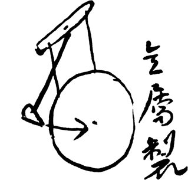
〇恰遇一个瞽目先生，敲著“报君知”走将来
问：“报君知”是何种鸣器？
答：即铜锣。
〇看见中间有个烂点头的拣了出来
问：出现霉点的东西吗？
答：对。
〇裹肚
问：“裹肚”是钱兜带还是腰带？
答：腰带。
〇只见那个人接上手，掂了一掂道：“好东西呀！”扑地就拍开……
问：“扑地”是“立即”，形容迅速的动作？
答：是，即“蓦地”。
问：“扑地”是“噗通”，形容声音？
答：不。
〇俺家头都要买去进可汗哩
问：俺的头目、俺的主人之意吗？
答：我想只是“俺”的意思。
【只、「俺」の意味だと思ふ。】
〇众人吃惊道：“好大龟壳，你拖来何干！”他道：“也是罕见的，带了他去。”众人笑道：“好货不置一件，要此何用。”有的道：“也有用处，有甚么天大的疑心，是灼他一卦，只没有这样大龟药。”
问：灼烧龟甲，以坼裂卜吉凶时，需要龟药吗？以什么方法使用龟药？
答：龟药，未听说过。想来恐怕是灼龟甲时所用的艾罢。
【硃蘺はきいたことなし、思ふに硃甲を灼くときに使ふ処の艾（よもぎ）を唝ふならん】
〇祖母绿
问：绿玉（Emerald）的一种吗？
答：是。
〇众人都笑指道：“敝友文兄的宝。”中有一人衬道：“又是滞货。”
问：“衬”是多嘴多舌吗？
答：不是。
问：是插嘴。
答：是。
〇文若虚也心中镬铎，忖道……
问：“镬铎”是哆哆嗦嗦？忐忑不安？
答：忐忑不安。=感到突兀=不可思议。
【=兀突=変だと思つて=（どきどきさせて）】
〇遂叫店小二拿出文房四宝来，主人家将一张供单绵料纸，折了一折
问：“供单绵料纸”是什么样的纸？
答：写契约用的纸（有韧性，类似日本用三桠[42]制成的纸）。
【=契約を書くに使ふ紙（韌性あつて日本の三椏（みつまた）で拵へた紙の様なもの）】
〇立合同议单张乘运等，……各无翻悔，有翻悔，罚契上加一，合同为照
问：“加一”是加倍的意思吗？
答：不对。增加一成（十分之一）。
【一割增です。】
〇况且文客官是单身，知何好将下船去，又要泛海回还，有许多不便处。
问：A.“将下船去”是装船归来吗？
答：是。
问：包括货物吗？
答：不。
问：B.“将下船去”是出船而回吗？
答：不。
问：与货物无关吧？
答：是。
“如何好将下船去”，是怎么能带到船上去的意思。
【=どうしてつれて船に行くことが出瘄るか】
〇说得文若虚与张大跌足道：“果然是客纲客纪，句句有理。”
问：“客纲客纪”是什么意思？
答：客人的帮手，即实在帮了客人的意思。
【=客様の手足の意味、即ち「宓によく客様を助けた（とりあつかつた）もの」の意】
“跌足道”，（由于钦佩）用脚蹬着地面说。[43]
【=（感心の爲めに）足で地面をただいて唝ふ】
〇“这是天大的福气，撞将来的，知何强得？”
问：“天大的福气是撞将来的”还是“这是天大的福气，撞将来的如何强求得”？“撞将来的”一句是承前呢，还是启后？
答：这是天大的好运气，这（=好运）是自己飞来的，怎么能人为地制造？
【これは天の様な大きい好運で、これ（=好運）は自分で飛んで瘄たのでどうして人爲的に（拵へることが）出瘄るか】
〇文若虚道：“好却好，只是小弟是个孤身，毕竟还要寻几房使唤的人，才住得。”
主人道：“这个不难，都在小店身上。”文若虚满心欢喜。
问：什么东西在“小店身上”？是照料对方的好意吗？或者是“使唤的人”吗？
答：指寻找仆人的事。
【使唤的人をさがすこと】
〇西洋布
问：是西洋织物还是专指“天竺”或什么地方的织物？
答：西洋的木绵织物。
【西洋の木綿織物】
〇解开来只见一团线，囊著寸许大一颗夜明珠
问：“看见一个用线编织的袋子里放着一颗寸许大的夜明珠”吗？
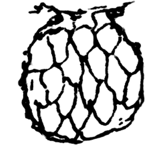
（增田画）
答：文章有不明之处。照原文理解，“一团线包着一颗夜明珠”，但似乎有点奇怪。还是只能译成“线编的袋里装入珠”罢。
【文章が不明の処あり、そのまま解すれば「一圇の綦が、一粒の夜明珠を包んで居た」が併し、少く可笑しい様です。矢張綦の編んだ囊に珠が入れてあると訳する外仕方無い】
〇咱国
问：“咱国”即自国吗？
答：自己的国家=我的国家。
【自分の國=私の國。】
〇道袍
问：这衣服怎么也解释不清。古人外出时，是与如今上海街头所见长外衣（不也叫“袍”吗？）一样的普通服装吗？“道”是道途还是道教？
答：“道袍”是普通服装。“道”是道教，但“道袍”仅“长衫”之意，与道教无关。
【併し意味は只「長衣」となつて居ます。道教と関係なし】
〇摸出细珠十数串，各送一串
问：为了把珍珠连起来，在珠上钻小孔，从中间穿过吗？
答：对。
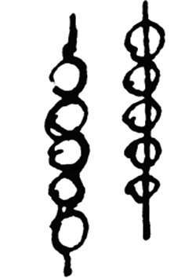
（增田画）
问：或者，仅仅纵向排列（不钻小孔）？
答：不对。
〇就在那里取了家小，立起家老，数年间，才到苏州走一遭。
问：读作“立起家老，数年间”，还是“立起家老数年间”？若是前者，“家老”是什么意思？
答：是前者，意为在那里娶妻，安置一个家政管理者（老年妇女，其职责还包括监督妻子），两三年后，到苏州走一趟。
【あそこで妻を取り家政管理者（老女で、その妻をも監督するものだと思ふ）を置き、そうして二三年の後には蘇州へ一度行きます】
〇料也没得与你，只是与你要
问：“料也”是必定、一定的意思吗？
答：想来，恐怕。料也=恐怕是……罢。
【思ふに、恐く。
料也=恐らく……だろう】
〇船上人把船后抛了铁锚，将桩橛泥犁上岸去钉停当了。
问：“桩橛泥犁”是掘泥犁吗？
答：“桩橛”是木制的。“泥犁”是掘泥之犁的意思，但不用于船上，是这样的东西罢（见图）。切入泥中。
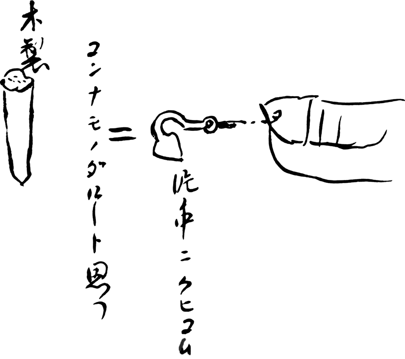
【だけれども、船には使はない。こんなものだろうと思ふ。泥の中にくひこむ】
〇偏要发个狼
问：愤慨之意吗？
答：无愤慨，稍有自辩之意。“狼”系狠之误。发狠=下定决心。
【憤慨なし、少し自弁の意あり。狼は狠の誤り。発狠=かたく决心してor】
〇正是：运退黄金失色，时来顽铁生辉，莫与痴人说梦，思量海外寻龟。
问：“痴人”是嘲讽听者？谁思量？说者还是听者？
答：说者对听者讲：运退的话黄金也要失色，时来的话顽铁也会放光，请休讲痴人想在海外寻龟之梦话罢！
【説者が聃者に唝ふ：
運退へば黄金も色失ひ、時瘄れば頑鐧も光を放つ、願はくは癡人が海外に硃を探さうと思ふ処の夢を説いて居ると唝ふなかれ！】
十
《儒林外史》（马二先生食游记和炼金术）[44]
叙西湖之景：
……真不数“三十六家花酒店，七十二座管弦楼！”
问：西湖真有这么多酒店、管弦楼么？不过是形容吧？
答：形容而已，犹如“白发三千丈”。“不数”系反语，其实等于“可说”。花酒店=雇用女店员的酒店。管弦楼=听音乐的场所=艺妓云集边唱边演之地（类似日本的“寄席”？）。
【形容にすぎない、「白朆三千丈」なり。「不啗」は反語で、宓は「唝可し」に等し。
花酒店=女店員を使つて居る酒店。
管弦樓=音蚲を聞せる所=蕓妓が集つて歌をうたひながら見せる所（寄席？）。】
……年纪小的都穿些红紬单裙子，也有模样生的好些的。
问：“有些漂亮”的意思吗？指服饰、姿态还是面容？
答：面容。
糟鸭
问：把鸭子切碎后煮熟叫“糟鸭”吗？
答“糟”即做酒时从米中榨取米酒后剩下的东西（不知日本叫什么），“糟鸭”其实就是酒渍家鸭。
【糟=酒を拵らへるとき、米から、米酒をしぼりとらなもの（日本を知らない）宓は家鴨の酒漬です。】
い
那船上女客在那里换衣裳，一个脱去元色外套，换了一件水田披风，一个脱去天青外套，换了一件玉色绣的八团衣服。
问：“元色”即黑色吗？
答：是的。“元”=玄。
问：“水田披风”？
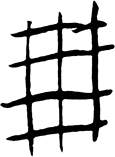
答：披风即外套（无袖），水田即如图状花纹。（日本叫“缟”罢？）
【披風=外套（袖のないもの）
（日本には縞と唝ふのか）模様なり。】
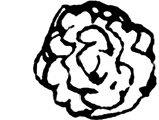
（增田画）
问：“玉色绣的八团衣服”是“绣成玉色的八个球”吗？
答：是用玉色，在衣服上绣八团花纹。如图。
【着物に八圇の模様を刺
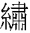
して居るもの。例へば】棺材厝基
问：停放棺材的场所吗？是未埋葬前临时停放棺材的地方吗？为什么要这么做？另外，棺材指制棺前的材料吗？
答：“棺材厝基”即棺材停放处。欲寻风水好的地方埋葬，一时难觅，就暂时停放某地。与“假葬”同（？）。在实在难以寻觅的时候，也有把棺材四周用砖围起来的。棺材即棺。
【善い所をさがして埋めたいが、急にそんな所を見つからないから、暫らく或る所に置く。「仮葬」と同じ（？）。中々みつからないときには周囫に煉瓦を以つて囫むことあり。】
靴桶
问：“靴桶”=对靴固定的隐藏？
答：放靴的圆桶。
【（靴）を入れる い箱（入れもの）】
い箱（入れもの）】
水磨的砖
问：“磨成水平的砖”还是“用水磨过的砖”？
答：用水磨过的砖，磨得非常光滑的砖。
【=非常にすべすべ磨かした塼】
马二先生步了进去，看见窗棂关着。马二先生在门外望里张了一张，见中间放着一张桌子，摆着一座香炉，众人围着，像是请仙的意思。马二先生想道：“这是他们请仙判断功名大事，我也进去问一问。”站了一会，望见一个人（A）磕头起来，旁边人（B）道：“请了一个才女来了。”马二先生听了暗笑。又一会，一个（C）问道：“可是李清照？”又一个（D）问道：“可是苏若兰？”又一个（E）拍手道：“原来是朱淑贞！”
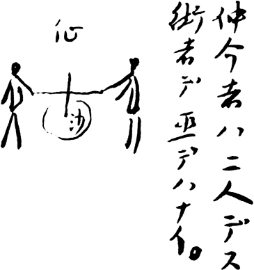
问：在这场合，为请仙而作为一个媒介者的巫人（术者）在吗？ A是请仙的当事者，还是成为仲介人的巫术者？
答：仲介者两人。是“术者”，不是“巫”。
【仲介者は二人です。術者で巫ではない。】
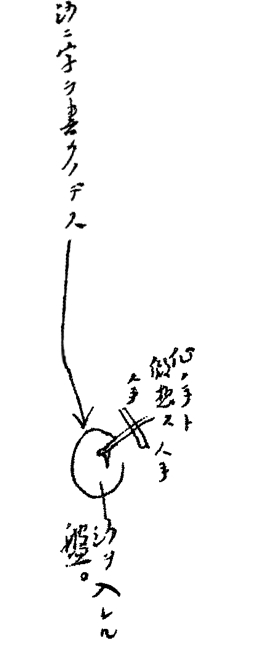
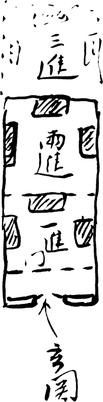
问：B、C、D、E是瞧热闹（起哄）的人吗？
答：A、B、C、D四人都是参观者，但系信徒，不是起哄者。
【 A、B、C、D四人とも馂硚者、然し信者です、やじ馬ではない。】
一间一间的房子，都有两进。
问：请图解“两进”。
答：见图。
恰好乡里人捧着许多 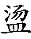
问：“面薄饼”是面和薄饼吗？
答：“面”[45]，不明，是面条罢。“薄饼”=面粉用水搅拌，做成圆而又薄，干锅里放少许油，烘熟。
【盪麫不明、「そば」だろう。
薄餅=麥粉を水で拌攪して丸く薄く乾いた鍋の上に少し油を涂で熟さしたもの】
上写冰盘大的二十八个大字……
问：“冰盘”是什么？
答：冰盘即最大的器皿（直径约一尺五寸）。
【澩盤=最大の皿（直徑尺五寸位）】
马二先生看过《纲鉴》，知道“南渡”是宋高宗的事……
问：《纲鉴》是原书名还是省略的书名？谁的著作？
答：《纲鉴》似系省略书名。明朝有《纲鉴正史约》（顾锡畴编纂），还有《纲鉴易知录》（吴秉权等辑），均为劣作。此处似指后者，因后者比较流传。
【綱鑑は略書名らしい。明に『綱鑑正史約』（顧錫疇纂）あり、又『綱鑑易知録』（吴秉榷等輯）あり、皆鄙陋の本だけれども、大抵後者だろうと思ふ。後者は割合に流行したものだから。】
……不瞒老先生说，我们都是买卖人，丢着生意，同他做这虚头事。他而今直脚去了，累我们讨饭回乡……
问：“直脚去了”是死亡的意思吗？
答：是的。
……候着他装殓，算还庙里房钱，叫脚子抬到清坡门外厝着。马二先生备个牲醴纸钱，送到厝所，看着用砖砌好了。
问：把厝所的棺材用砖砌起来使其坚固吗？
答：因近期内无法埋葬，用砖四周砌好。
【近い内に埋めまいと思ふから塼で囫んで置くのです】
十一
《高老夫子》
……也许不过是防微杜渐的意思。
问：急速暴露（露骨）吗？
答：微小东西也许变成庞然大物，渐渐进展的也可带来严重后果。因此须“防微杜渐”。
【微なるものが大した者（もの）になるかも知らん、少しづつ少しづつと瘄ても大変な結果に成ることあり。だから「微を防ぎ、漸でも杜ぐ可し」ですだ】
……膝关节和腿节关接二连三地屈圻。
问：接连地先是膝关节、马上腿关节屈折之意吗？
答：连续弯曲两、三次。
【（つづけさまに）二三度屈折す】
变戏法
问：“变戏法”什么意思？
答：“变”即做、干，“戏法”即魔术。
【=するorやる
手品】
都骂他急筋鬼。
问：“急筋鬼”？
答：急筋鬼不明。或许是“过于急躁的家伙”罢。
【急筋鬼不明
或は「あまり、いそぐぬ」でしゃう。】
问：所谓墙上写着“物归原处”的大字，是墙上挂的单纯装饰性的扁额吗？还是并非扁额而直接写在墙上？或是为了提防小偷？墙上写“物归原处”是特殊的场合还是例行常套？
答：恐系胡乱涂写，也有写在纸上贴上去的。不是为了提防小偷。“用毕请放回原处”的意思。当然，也含有“不许拿走”之意。
【蚲書かも知れん
又紙に書いて張るときもある。
盉人の用心でもない。つまり、一度使つたら、もとの所に置け！との意。勿論、「持つて行くな」の意味も含んで居る。】
注 释
[33] 《徐文长故事》 民间故事，林兰等编写。
[34] 《二诗人》 短篇小说，郁达夫作。
[35] 原件编号缺l。
[36] 《皮带》 短篇小说，张天翼作。
[37] 《稀松的恋爱故事》 短篇小说，张天翼作。
[38] 鲁迅当时未答，参看320628致增田涉信。
[39] “耗痢窝” 当指好莱坞（Hollywood）。
[40] 原作为“未饿”。
[41] 此处原有关于“亲是交门”二句的解答，见321219致增田涉信附件。
[42] 三桠 名结香、黄瑞香，落叶灌木。原产于中国。茎皮纤维为造纸原料。因枝常三歧，故日本称三桠。
[43] 此处增田未问，鲁迅自作解释。
[44] 这是节选《儒林外史》第十四回和第十五回所写马纯上游西湖遇假神仙的故事片断。
[45] “” 原作为“烫”。